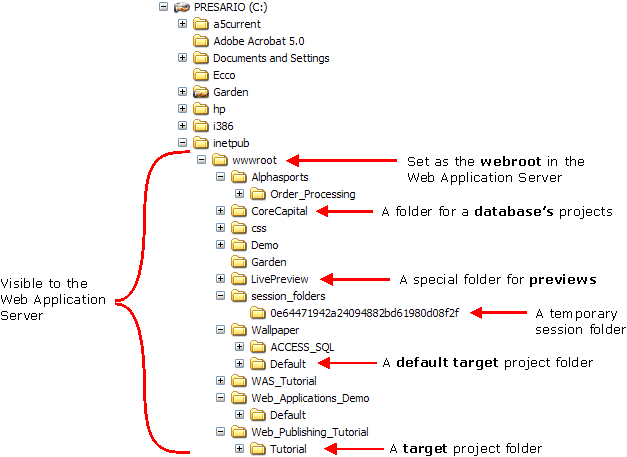

Creating a New Web Project Profile
A web project profile defines where and how you will publish your pages. You may have multiple, independent profiles that allow you to publish to different servers. For example, you might publish one version of your website via FTP to an ISP and a second version to an internal corporate LAN-connected web server.
Look at Publishing a Page to a Server for an example of how to define a profile.
Click
 Profiles to display the Web
Project Properties dialog box.
Profiles to display the Web
Project Properties dialog box.Select "
" in the Profile list. In the General > Profile Name section of the properties list, replace "
" with the name of the new profile. In the General > Publishing Type field select either:
"Publish on LAN" - the files will be transferred using Windows file services
"Publish via FTP" - the files will be transferred using FTP
If you selected "Publish via FTP" in step 4, make a selection from the General > FTP Program list (Version 7 and above). The options are:
"Internal"
"External"
"Prompt at Publish Time"
All pages in a project can read and write common application variables. If you know what application variables you need:
Click
 in the General > Application Variables
field to display the Define Application Variables for
Web Projects dialog box. You can return to this dialog any time
later.
in the General > Application Variables
field to display the Define Application Variables for
Web Projects dialog box. You can return to this dialog any time
later.Select the first profile from the Profile list.
Enter each variable definition on a separate line, in the format Variable_Name = "Value". Remember, all application variables are type character.
Repeat the variable definition for all other profiles.
Click OK to continue.
Web project aliases make it possible to develop a web application in one environment, yet run it in another. This is done by replacing all database, data file, and connection string path information with aliases. For example, if the database in which the web project lives is c:\wms\wmsdata.adb and your grid references a table called c:\wms\patients.dbf, then when the grid is saved, what's saved is: PathAlias:ADB_Path\patients.dbf. PathAlias:ADB_Path is a built-in alias that refers to the location of your web publishing application. You would use the same type of path aliases when publishing Microsoft Access databases to web servers. When you "publish" your application, Alpha Anywhere replaces all aliases with their expanded values.
If you know what aliases you need:
Click
to display the Define Path and Connection
Aliases for Web Projects dialog box. You can return to this dialog
any time later.Define aliases. See Path and Connection String Aliases.
Click OK to continue.
 Note : Each alias must
define the full path to a directory. Aliases cannot be URLs.
Note : Each alias must
define the full path to a directory. Aliases cannot be URLs.
 Note : You can define
the webroot folder (also known as the "document root") for
a Application Server to be any
directory on the server computer.
Note : You can define
the webroot folder (also known as the "document root") for
a Application Server to be any
directory on the server computer.
 Note : When your browser
reads pages in your local webroot folder, the URL will start with localhost.
Note : When your browser
reads pages in your local webroot folder, the URL will start with localhost.
If you selected "Publish on LAN" in step 4:
In the Publish to LAN > Webroot field enter the full path to your webroot folder (e.g. \\ServerMachineName\a5webroot ).
In the Publish to LAN > Folder field enter the folder within the webroot folder where the project will be published. Leave this setting blank to publish directly to the webroot folder. Specify "
" to publish to a folder named " Database\Project ", where Database represents the path to your application folder and Project represents the name of the selected project.
The following picture shows the directory structure of a server's webroot after several different projects had been published.

Depending on the database that you are using, the Application Server may expect your application's data files to be located on the same server as its web pages. This is true for Alpha Five and Microsoft Access databases.
If you selected "Publish via FTP" in step 4:
Enter the target FTP address in the Publish using FTP > FTP Address field.
Enter your user name in the Publish using FTP > Username field.
Enter your password in the Publish using FTP > Password field.
Enter the target folder in the Publish using FTP > Folder field.
Optionally, if you need to send data files to the remote server, select "True" or check the Publish Database Files > Publish data files field.
If you checked the Publish Database Files > Publish data files field, in the Publish Database Files > Files to publish field click the
to display the Select
Database Files to Publish dialog box. Place checks next to the
Alpha Anywhere .DBF files you want to publish. Click Add File and select the
Microsoft Access database files you want to
publish.In the Publish Database Files > Folder field enter the folder on the server computer where the project will be published. If publishing to a FTP site, specify the name of the folder within the FTP root.
If you want to open a page on the target server computer after publishing:
In the Open Page after Publish > Base URL field specify the host name of the web server (e.g. http://www.mydomain.com or http://ServerMachine (where ServerMachine is the network name of the server computer.
In the Open Page after Publish > Server Port field specify the port that the Application Server is using.
In the Open Page after Publish > Default Page field click
 to select the page to open.
to select the page to open.Click OK to save your inputs.
See Also
Configuring and Running the Server
Limitations
Web publishing applications only.